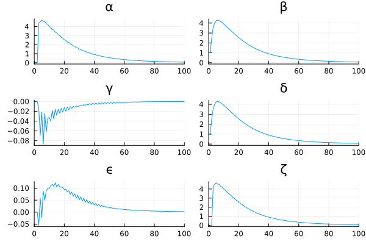
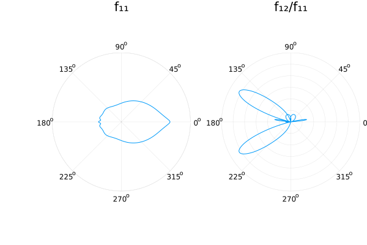

Scattering: Mie Phase Function Tutorial
Introduction
This tutorial shows the standard Mie workflow in vSmartMOM.Scattering:
- Define an aerosol size distribution and refractive index
- Build a
MieModel(NAI2 in this example) - Compute aerosol optical properties (
GreekCoefs,ω̃,k,fᵗ) - Reconstruct phase matrix elements on a custom angular grid
- Run optional AD and cross-section convenience routines
Load packages
using vSmartMOM.Scattering
using Distributions
using FastGaussQuadrature
using Parameters
const HAS_PLOTS = let
try
@eval using Plots
true
catch
false
end
end
if !HAS_PLOTS
@info "Plots.jl not available; plotting sections in this tutorial are skipped."
endDefine aerosol properties
rₘ = 0.3 # median radius [μm]
σ = 2.0 # geometric stddev [-]
nᵣ = 1.3 # real refractive index
nᵢ = 0.001 # imaginary refractive index (use positive convention)
r_max = 30.0 # upper integration radius [μm]
nquad_radius = 1500 # size quadrature points
size_distribution = LogNormal(log(rₘ), log(σ))
aero = Aerosol(size_distribution, nᵣ, nᵢ)
------------------
Aerosol Struct
------------------
Size distribution: Distributions.LogNormal{Float64}(μ=-1.2039728043259361, σ=0.6931471805599453)
Real refractive Index nᵣ: 1.3
Imaginary refractive Index nᵣ: 0.001
Create model settings
λ = 0.55 # wavelength [μm]
polarization_type = Stokes_IQUV()
l_max = 20
Δ_angle = 2.0
truncation_type = δBGE(l_max, Δ_angle)
model_NAI2 = make_mie_model(
NAI2(),
aero,
λ,
polarization_type,
truncation_type,
r_max,
nquad_radius,
)MieModel{NAI2, Float64}(NAI2(), Aerosol(Distributions.LogNormal{Float64}(μ=-1.2039728043259361, σ=0.6931471805599453), 1.3, 0.001), 0.55, Stokes_IQUV{Float64}(4, [1.0, 1.0, -1.0, -1.0], [1.0, 0.0, 0.0, 0.0]), δBGE{Float64}(20, 2.0), 30.0, 1500, [0.0;;;], [0.0;;;])Compute aerosol optical properties
aerosol_optics_NAI2 = compute_aerosol_optical_properties(model_NAI2)
println("ω̃ = ", aerosol_optics_NAI2.ω̃)
println("k = ", aerosol_optics_NAI2.k)
println("fᵗ = ", aerosol_optics_NAI2.fᵗ)[ Info: Fraction of size distribution cut by max radius: 1.5279000287193867e-9 %
ω̃ = 0.9822467101268103
k = 1.9473439214008932
fᵗ = 1.0Inspect Greek coefficients
@unpack α, β, γ, δ, ϵ, ζ = aerosol_optics_NAI2.greek_coefs
if HAS_PLOTS
p1 = plot(α, title="α")
p2 = plot(β, title="β")
p3 = plot(γ, title="γ")
p4 = plot(δ, title="δ")
p5 = plot(ϵ, title="ϵ")
p6 = plot(ζ, title="ζ")
plot(p1, p2, p3, p4, p5, p6, layout=(3, 2), legend=false)
xlims!(0, 100)
else
println("Skipping Greek-coefficient plots (Plots.jl not installed).")
end
These coefficients are Fourier-space quantities used by RT kernels. Reconstruct angle-dependent phase-matrix elements only when needed.
Reconstruct phase matrix elements
μ_quad, _ = gausslegendre(500)
scattering_matrix = reconstruct_phase(aerosol_optics_NAI2.greek_coefs, μ_quad)
@unpack f₁₁, f₁₂, f₂₂, f₃₃, f₃₄, f₄₄ = scattering_matrix
if HAS_PLOTS
p1 = plot(μ_quad, f₁₁, yscale=:log10, title="f₁₁")
p2 = plot(μ_quad, f₁₂ ./ f₁₁, title="f₁₂/f₁₁")
plot(p1, p2, layout=(2, 1), legend=false)
xlabel!("cos(Θ)")
# Polar view (Θ = 0: forward direction)
p1 = plot(
[acos.(μ_quad); -reverse(acos.(μ_quad))],
log10.([f₁₁; reverse(f₁₁)]),
proj=:polar,
yscale=:log10,
title="f₁₁",
lims=(-3, 4.2),
yaxis=false,
)
p2 = plot(
[acos.(μ_quad); -reverse(acos.(μ_quad))],
[abs.(f₁₂ ./ f₁₁); reverse(f₁₂ ./ f₁₁)],
proj=:polar,
title="f₁₂/f₁₁",
lims=(0, 0.6),
yaxis=false,
)
plot(p1, p2, layout=(1, 2), legend=false)
xlabel!("Θ")
else
println("Skipping phase-matrix plots (Plots.jl not installed).")
end
AD mode
autodiff=true returns one AerosolOptics object. The Jacobian is stored in derivs with columns corresponding to: [rₘ, σ, nᵣ, nᵢ].
aerosol_optics_ad = compute_aerosol_optical_properties(model_NAI2; autodiff=true)
println("AD derivs size: ", size(aerosol_optics_ad.derivs))[ Info: Fraction of size distribution cut by max radius: 1.5279000287193867e-9 %
AD derivs size: (4568, 4)Convenience APIs for cross-sections and scalar phase function
μ_pf, w_μ_pf, p11, C_ext, C_sca, g = phase_function(aero, λ, r_max, nquad_radius)
println("phase_function C_ext = ", C_ext, ", C_sca = ", C_sca, ", g = ", g)
XS_ext, XS_sca, Cext_eff, Csca_eff = compute_aerosol_XS(aero, λ, r_max, nquad_radius)
println("compute_aerosol_XS XS_ext = ", XS_ext, ", XS_sca = ", XS_sca)
println("compute_aerosol_XS Cext_eff = ", Cext_eff, ", Csca_eff = ", Csca_eff)[ Info: Fraction of size distribution cut by max radius: 1.5279000287193867e-9 %
phase_function C_ext = 1.947343921400893, C_sca = 1.912772160281469, g = 0.8253453575729996
[ Info: Fraction of size distribution cut by max radius: 1.5279000287193867e-9 %
compute_aerosol_XS XS_ext = 1.947343921400893, XS_sca = 1.912772160281469
compute_aerosol_XS Cext_eff = 2.6347179078976017, Csca_eff = 2.5879429971446117Optional PCW workflow
If you want to run the PCW decomposition directly, precompute (or load) Wigner tables:
N_max = 120
wigner_A, wigner_B = compute_wigner_values(N_max) # can be expensive
model_PCW = make_mie_model(
PCW(),
aero,
λ,
polarization_type,
truncation_type,
r_max,
nquad_radius,
wigner_A,
wigner_B,
)
aerosol_optics_PCW = compute_aerosol_optical_properties(model_PCW)Optional animation (heavy)
Set ENV["VSMARTMOM_RUN_HEAVY_DOCS"]="true" before execution to enable.
if get(ENV, "VSMARTMOM_RUN_HEAVY_DOCS", "false") == "true"
if HAS_PLOTS
anim = Plots.Animation()
for r = 0.03:0.10:4.3
local size_distribution_i = LogNormal(log(r), log(σ))
local aero_i = Aerosol(size_distribution_i, nᵣ, nᵢ)
local model_i = make_mie_model(NAI2(), aero_i, λ, polarization_type, truncation_type, r_max, nquad_radius)
local optics_i = compute_aerosol_optical_properties(model_i)
local smat_i = reconstruct_phase(optics_i.greek_coefs, μ_quad)
local p1_i = plot(μ_quad, smat_i.f₁₁, yscale=:log10, title="f₁₁, r = $(round(r, digits=2)) μm")
ylims!(1e-3, 1e3)
local p2_i = plot(μ_quad, smat_i.f₁₂ ./ smat_i.f₁₁, title="f₁₂/f₁₁")
ylims!(-1.1, 1.1)
local p = plot(p1_i, p2_i, layout=(2, 1), legend=false, size=(600, 700))
Plots.frame(anim, p)
end
Plots.gif(anim, fps=5)
else
@warn "Skipping heavy animation because Plots.jl is not installed."
end
endThis page was generated using Literate.jl.